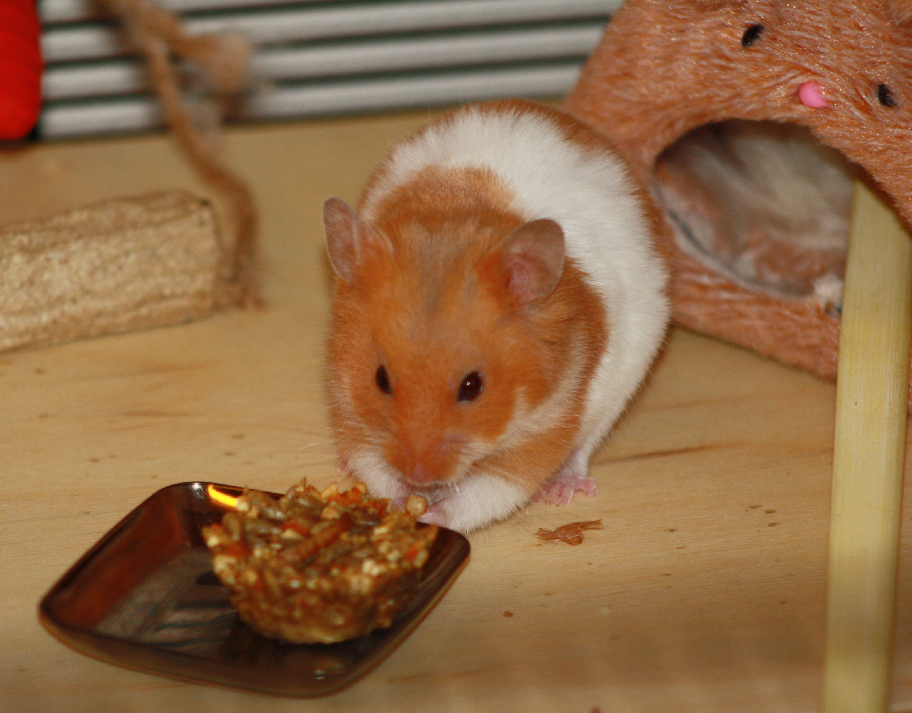

11-Apr-2017 | Milku
Suggestions for tasty hamster treats you can make at home.
Don't get excited! This isn't going to tell you how to use hamsters as an ingredient in your culinary endeavours. No recipes for hamster stew or Hamster en croute here. Perhaps I should have called my post 'Cooking for Milku' so you didn't get the wrong idea. Really, I thought better of you!
There are quite a few websites out in cyber space that will give you ideas on what treats to give your hamster. My humans have been trying to give me some nice things to eat, but they really went up in my estimation last weekend when they made some homemade hamster treats. In the next few posts, I'm going to share with you their recipes and my verdicts on the offerings.
Yesterday evening I received my first gourmet treat. It comprised a mix of:
Once mixed, the concoction was spooned into tiny moulds and baked until firm.
I loved it!
It looked like it might be a bit heavy to carry off to my den so I indulged my humans' need to see me eating my treat. But after dark, it was a different matter. Fortified by gnawing on a corner of the treat, I managed to haul it off to a secluded corner and enjoy it in peace.
I can't wait to sample the next recipe.